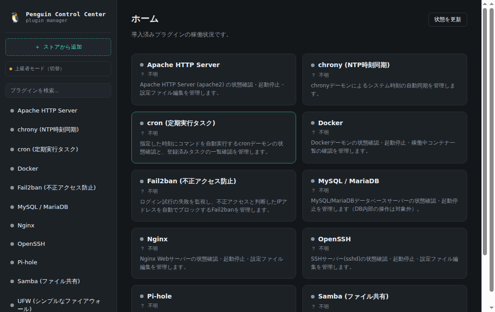

Penguin Control Centerは、Linuxの管理系CLIツールをGUIから安全に操作しながら、 その裏で実行されているコマンドをそのまま学べる、プラグイン型のオープンソース管理ツールです。 プラグインをストアから追加するだけで、対応ソフトウェアを増やしていけます。

CLIのみで管理されるソフトウェアを、GUIから安全に設定・操作。
GUI操作と対応するCLI・設定ファイルを並べて表示し、実務のLinux操作を学べる。
ストアから追加するだけで、対応ソフトウェアを増やせる。
プラグインの追加は、誰でも自由にコードをマージできる形ではなく、 提案Issue をもとに公式が内容を確認したうえでストアに掲載する運営方式をとっています。 コードが書けなくても、対応してほしいソフトウェア名と欲しい操作を書くだけで提案できます。